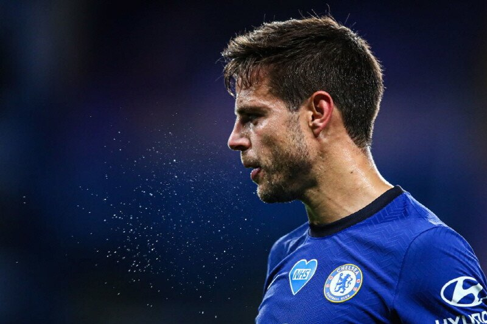

고향 CA 오사수나의 유소년팀 출신으로, 아스필리쿠에타는 2007년 4월 8일, 0-2로 패한 레알 마드리드 CF 원정에서 라 리가 데뷔전에 당시 리저브팀에서 차출된 채 출전하였다. 그는 데뷔 초기에 미드필더였다.2007-08 시즌, 타팀원들이 부상으로 빠짐에 따라, 아스필리쿠에타는 불과 18세의 나이에 주전자리를 꿰찼고, 그에 따라 오른쪽 수비수를 맡게 되었다. 그는 이후에도 같은 포지션으로 활약하였고, 이 시즌에 2경기를 제외하고 모두 출장하였다.2010년 6월 21일, 프랑스 챔피언 올랭피크 드 마르세유는 그와 이적에 합의하였고, €7M 유로의 이적료에 4년 계약을 하였다. 1주 후, 나바라 측은 계약에 합의하였고, 출장횟수를 고려하여 이적료를 €9.5M까지 인상하였다. 그의 UEFA 챔피언스리그 첫경기 상대는 FC 스파르타크 모스크바였는데, 그는 이 경기에서 아군 골네트를 갈라 자책골이자 이 경기의 결승골을 기록하였다.2010년 11월 27일, 그는 4-0으로 승리한 몽펠리에 HSC전에서 초반에 골을 넣었고, 그의 소속팀은 리그 선두에 올랐으나, 아스필리쿠에타는 왼쪽 무릎 인대 부상을 당하였고, 6달동안 경기에 출장하지 못하게 되었다.2012년 8월 24일, 그는 첼시 FC 로 이적했다. 9월 26일, 데뷔전인 캐피털 원 컵 1라운드 울버햄튼전에서 선발로나서 팀의 6-0승리를 이끌었다.
